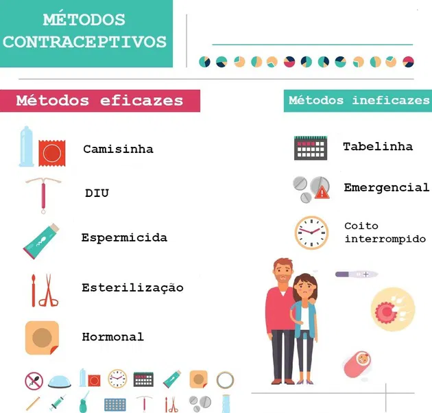
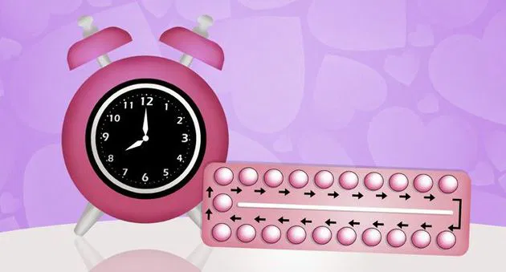
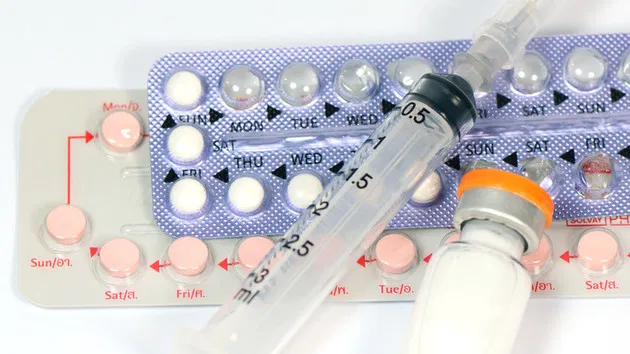
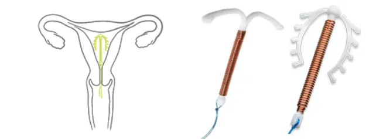
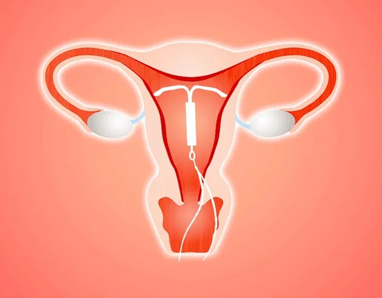
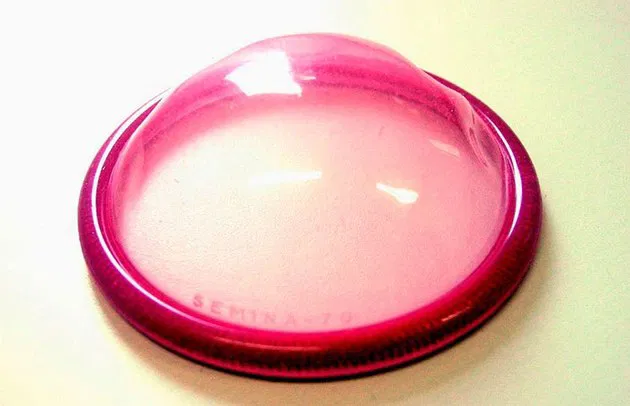
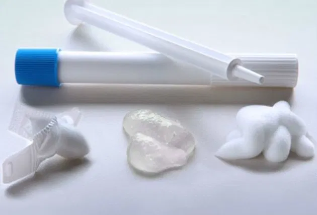
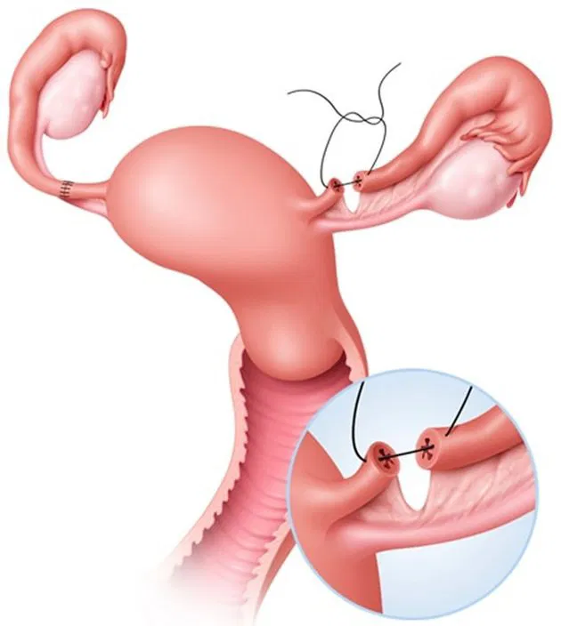
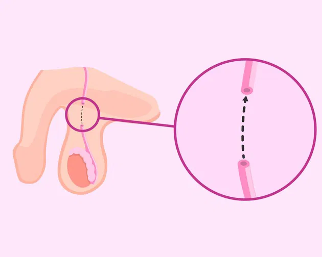
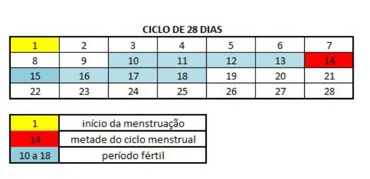

Ovulação e Período Fértil
Os métodos contraceptivos ou anticoncepcionais têm o objetivo de evitar uma gravidez não programada e/ou prevenir infecções sexualmente transmissíveis (ISTS), como no caso dos preservativos.

A escolha do método a ser adotado deve ser feita a partir do perfil da mulher e em comum acordo com o parceiro, além disso, é recomendada a orientação médica. Cada método possui características próprias de uso, vantagens, desvantagens e um nível de eficácia que pode variar. Confira a seguir uma lista sobre os métodos contraceptivos, suas vantagens e desvantagens.
Camisinha
A camisinha é um preservativo, que pode ser masculino ou feminino, sendo considerado um método de barreira. Eles são considerados os mais seguros, pois além de evitar a gravidez, também protegem contra as infecções sexualmente transmissíveis (DST), como a AIDS.
Preservativo masculino (camisinha masculina)
Considerado um dos métodos contraceptivos mais populares, a camisinha masculina protege contra ISTs, tem baixo custo e é fácil de usar. Além disso, ela apresenta um alto índice de eficácia quando utilizada do modo correto. É um preservativo que consiste em uma capa fina de borracha que recupera o pênis durante a relação sexual, impedindo o contato do sêmen com a vagina, o ânus ou a boca. O esperma fica retido e os espermatozoides não entram no canal vaginal.
Confira na tabela abaixo algumas vantagens e desvantagens da camisinha masculina.
| Vantagens | Desvantagens |
|---|---|
| É livre de hormônios. | Se não usada corretamente pode rasgar ou sair durante a relação sexual. |
| Protege contra ISTs. | Pode causar reação alérgica ao látex. |
| Pode ser utilizada somente no momento da relação sexual. | Diminui a sensibilidade. |
Preservativo feminino (camisinha feminina)
.webp)
A camisinha feminina pode ser colocada até 8 horas antes do ato sexual, sendo também um método de barreira, pois não permite que o espermatozoide entre em contato com o canal vaginal. Se utilizado corretamente, conforme instruções, apresenta um alto índice de eficácia. O seu plástico é mais fino e mais lubrificado que a masculina e o seu uso não é recomendado simultaneamente com a camisinha masculina. Veja na tabela abaixo algumas vantagens e desvantagens da camisinha feminina.
| Vantagens | Desvantagens |
|---|---|
| Protege contra ISTs | Exige prática para utilizar de forma confortável. |
| Pode ser usado durante a amamentação. | Menos eficaz que a camisinha masculina. |
| Não afeta o uso de outros medicamentos. | Pode causar irritação ou reações alérgicas. |
Pílula anticoncepcional

As pílulas anticoncepcionais são feitas com hormônios semelhantes aos que são produzidos pelo próprio corpo (estrógenos e progesterona). Elas atuam impedindo a Ovulação e dificultando a passagem dos espermatozoides para o interior do útero. Elas possuem uma eficácia de 99,8% quando utilizados de forma correta e regular, ou seja, é recomendado que seja tomada uma pílula por dia sempre no mesmo horário.
Veja na tabela abaixo algumas vantagens e desvantagens da pílula anticoncepcional.
| Vantagens | Desvantagens |
|---|---|
| Pode reduzir o fluxo e dores relacionadas à menstruação. | Pode causar efeitos colaterais. |
| Podem auxiliar no controle da acne. | Pode causar alterações no ciclo menstrual. |
| Pode ser tomada por um tempo prolongado. | Não protege contra ISTs |
Anticoncepcional injetável

Anticoncepcional injetável semelhante à pílula e consiste na aplicação de uma solução oleosa que libera a mesma quantidade diária de hormônios que a pílula. Pode ser aplicada de forma mensal ou uma a cada três meses. Não interfere com a menstruação, que ocorre normalmente. É mais prático que a pílula, pois não é preciso administrá-lo diariamente, além de causar menos efeitos colaterais. É um dos métodos contraceptivos com maior índice de eficácia.
Confira na tabela abaixo algumas vantagens e desvantagens do anticoncepcional injetável.
| Vantagens | Desvantagens |
|---|---|
| Não exige controle diário ou semanal. | Pode causar aumento de peso e incômodo abdominal. |
| Pode reduzir o fluxo e as dores relacionadas à menstruação. | Deve ser aplicada por um profissional da saúde. |
| Apresenta tempo de duração maior. | O retorno da fertilidade, após encerramento do uso pode demorar até 1 ano. |
Adesivo Anticoncepcional
O contraceptivo em forma de adesivo é semelhante a um esparadrapo, sendo aplicado na pele para que ocorra a liberação dos hormônios, que acontece de forma contínua. O tempo de duração do adesivo é de uma semana, devendo ser substituído durante 3 semanas, atingindo assim, 21 dias. Assim como a pílula, a orientação é que seja feita uma pausa de uma semana para que o processo seja iniciado.
Confira na tabela a seguir algumas vantagens e desvantagens do adesivo anticoncepcional.
| Vantagens | Desvantagens |
|---|---|
| Tem alto índice de efetividade. | É visível e pode descolar da pele e cair. |
| Não exige controle diário. | Exige controle do número de semanas em que foi utilizado. |
| Não interfere na vida sexual. | Pode causar irritação ou reações alérgicas. |
Dispositivo intrauterino (DIU)
O DIU é método contraceptivo do tipo mecânico e pode ser de cobre ou hormonal.
DIU de cobre

O DIU de cobre possui uma estrutura metálica com ação espermicida intrauterina, impedindo que o espermatozoide alcance o óvulo e apresentando uma eficácia contra a gravidez de 99,6%. Inserido dentro do útero por um profissional da saúde, o DIU de cobre libera íons de cobre que promovem a alteração da mucosa cervical, além de interferir na qualidade do esperma, impedindo-o de chegar às tubas uterinas.
Veja na tabela abaixo algumas vantagens e desvantagens do DIU de cobre.
| Vantagens | Desvantagens |
|---|---|
| Pode permanecer até 10 anos, podendo ser retirado a qualquer momento. | Pode aumentar o fluxo menstrual. |
| Pode ser utilizado no período de amamentação. | Pode causar infecção ou perfuração do útero. |
| A fertilidade é retomada de forma rápida após a retirada. | Pode causar cólicas e/ou sangramentos irregulares. |
DIU hormonal

O DIU hormonal (SIU) apresenta material macio e formato de T que possui um reservatório de hormônios sendo estes liberados em doses baixas no útero. Apresentando alto índice de eficácia, é importante verificar com um profissional da saúde qual método é o mais adequado para o perfil apresentado.
Veja na tabela abaixo algumas vantagens e desvantagens do DIU hormonal.
| Vantagens | Desvantagens |
|---|---|
| Pode permanecer no útero por até 5 anos, com a possibilidade de remoção a qualquer momento. | Pode ocorrer sangramento irregular no período de adaptação. |
| Pode reduzir o fluxo menstrual. | Pode causar cólicas. |
| Não interfere na relação sexual. | Em alguns casos aumenta a sensibilidade e acne. |
Diafragma

O diafragma é um método de barreira móvel, que pode ser colocado e retirado da vagina e consiste em uma estrutura de látex combinada com gel espermicida. É preciso consulta médica para verificação do tamanho a ser utilizado. Deve ser colocada duas horas antes da relação sexual e retirada após 4 a 6 horas, sendo necessário ser lavado com água e sabão após o uso e sua durabilidade é de cerca de 2 anos. Livre de hormônios e com baixo custo, o diafragma não apresenta um alto índice de eficácia, por isso, a recomendação do uso combinado com espermicida.
Confira na tabela a seguir algumas vantagens e desvantagens do diafragma.
| Vantagens | Desvantagens |
|---|---|
| Pode ser utilizado somente quando precisar. | Exige controle do número de horas de uso. |
| É livre de hormônios. | Requer uso combinado de espermicida para aumentar a eficácia. |
| Não é afetado por outras medicações. | Pode causar irritação, reação alérgica e infecção no trato urinário. |
Anel vaginal

O anel vaginal é um método hormonal que possui uma formulação semelhante à da pílula anticoncepcional, tendo aparência semelhante a uma pulseira, é flexível e transparente. É introduzido na vagina e acomodado no colo do útero no 5º dia de menstruação, onde permanece por 3 semanas liberando hormônios que evitam a liberação dos óvulos.
Veja na tabela abaixo algumas vantagens e desvantagens do anel vaginal.
| Vantagens | Desvantagens |
|---|---|
| Alto índice de eficácia. | Pode causar desconforto e irritação. |
| Não exige controle diário. | Pode causar alteração do peso. |
| Não interfere na vida sexual. | Pode causar dores de cabeça e alterações de humor. |
Veja também: Menstruação
Espermicida

O espermicida é um considerado um complemento contraceptivo, o qual deve ser utilizado de forma conjunta com outros métodos, como com o diafragma e preservativo. Sua principal ação é criar um ambiente que dificulte a movimentação dos espermatozoides. São comercializados em diferentes formatos, podendo ser em creme, gel e até espumas. Devem ser inseridos na vagina 5 a 90 minutos antes da relação sexual e, após o ato, é preciso aguardar no mínimo 6 horas para higienização.
Confira na tabela a seguir algumas vantagens e desvantagens do uso do espermicida.
| Vantagens | Desvantagens |
|---|---|
| É de fácil utilização. | Se utilizado sozinho tem baixo índice de eficácia. |
| É livre de hormônios. | Pode causar irritação, reação alérgica e infecção no trato urinário. |
| É de fácil obtenção. | Exige controle de horas antes e depois da relação sexual. |
Métodos Contraceptivos Definitivos
Os métodos contraceptivos definitivos consistem na esterilização permanente e pode ser realizado tanto nos homens quanto nas mulheres, impedindo assim, que os espermatozoides cheguem ao óvulo. De acordo com a Lei do Planejamento Familiar, pessoas com mais de 25 anos e que tiverem pelo menos 2 filhos vivos, ou quando houver risco de vida para a mulher ou para bebê, podem usar os métodos contraceptivos definitivos.
Laqueadura

É a esterilização nas mulheres que consiste na ligadura das trompas de Falópio. É realizado um procedimento cirúrgico em que o médico utiliza um instrumento que bloqueia a passagem do espermatozoide até o óvulo. Em alguns casos é removido um pedaço da trompa.
Vasectomia

A vasectomia é a esterilização realizada no homem. Ela consiste no bloqueio dos ductos deferentes, responsáveis pelo transporte do esperma para outras glândulas, de modo que o sêmen não tenha mais espermatozoides. A partir desse procedimento, considera-se que o organismo demore 3 meses para se livrar e todo espermatozoide.
Confira na tabela a seguir algumas vantagens e desvantagens do método contraceptivo permanente.
| Vantagens | Desvantagens |
|---|---|
| Tem duração permanente. | Não tem reversão. |
| É livre de hormônios. | É um procedimento cirúrgico realizado por médico. |
| Não afeta o uso de outros medicamentos. | Pode haver complicações pós-cirúrgicas. |
Métodos contraceptivos ineficazes ou emergenciais
Pílula do Dia Seguinte
A pílula anticoncepcional de emergência só deve ser usada excepcionalmente e nunca deve ser adotada como método contraceptivo usual. Cada dose é composta por duas pílulas que devem ser ingeridas com intervalo de 12 horas. Elas concentram elevada dose hormonal (o equivalente a 8 pílulas anticoncepcionais de uso prolongado) que retarda a ovulação, dificultando assim a gestação. O uso frequente da pílula do dia seguinte pode causar alterações no ciclo menstrual.
Confira na tabela abaixo algumas vantagens e desvantagens da pílula do dia seguinte.
| Vantagens | Desvantagens |
|---|---|
| Maior índice de eficácia quando utilizada dentro do prazo de 12 horas após a relação sexual. | Possui dose elevada de hormônios em uma única pílula. |
| Pode ser utilizada até 5 dias após a relação sexual sem uso de outro método contraceptivo | Pode alterar o ciclo menstrual. |
Tabelinha

A tabelinha é um método contraceptivo natural que permite à mulher saber o seu período fértil, ou seja, o período do mês em que ela está ovulando e pode engravidar. Ao adotar este método contraceptivo, a mulher opta por ter relações sexuais somente nos dias não férteis do ciclo menstrual. É um método que exige regularidade, pois em casos de erro a eficácia de uso chega a 76%. Para utilizar esse método, é preciso registrar o primeiro dia da menstruação, em pelo menos seis meses para se ter conhecimento da duração do ciclo. Considera-se que o ciclo menstrual tem início no 1º dia da menstruação e termina na véspera da menstruação seguinte. É importante destacar que em adolescentes o ciclo menstrual sofre muitas alterações, mas a maioria dos ciclos tem entre 28 e 31 dias. O período fértil corresponde à metade do ciclo, por exemplo se o seu ciclo é de 28 dias, o 14ª dia será o dia fértil, sendo que deve ser considerado dois dias antes e dois dias depois do dia fértil.
Veja a seguir as principais vantagens e desvantagens da tabelinha.
| Vantagens (Tabelinha) | Desvantagens (Tabelinha) |
|---|---|
| É natural e livre de hormônios. | Não é confiável e tem alto risco de falha. |
| Baixo custo (requer apenas anotações). | Não protege contra ISTs. |